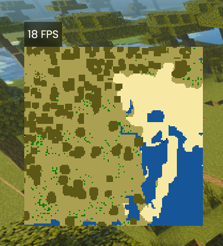

This is the second version of my "Block Map" script. It's lacking in features compared to the original, but performance is way better and there are more blocks that it knows how to handle in terms of giving the right colour.
This version stores blocks that were previously scanned, and renders the map a bit more efficiently, allowing for larger maps at better frame rates.